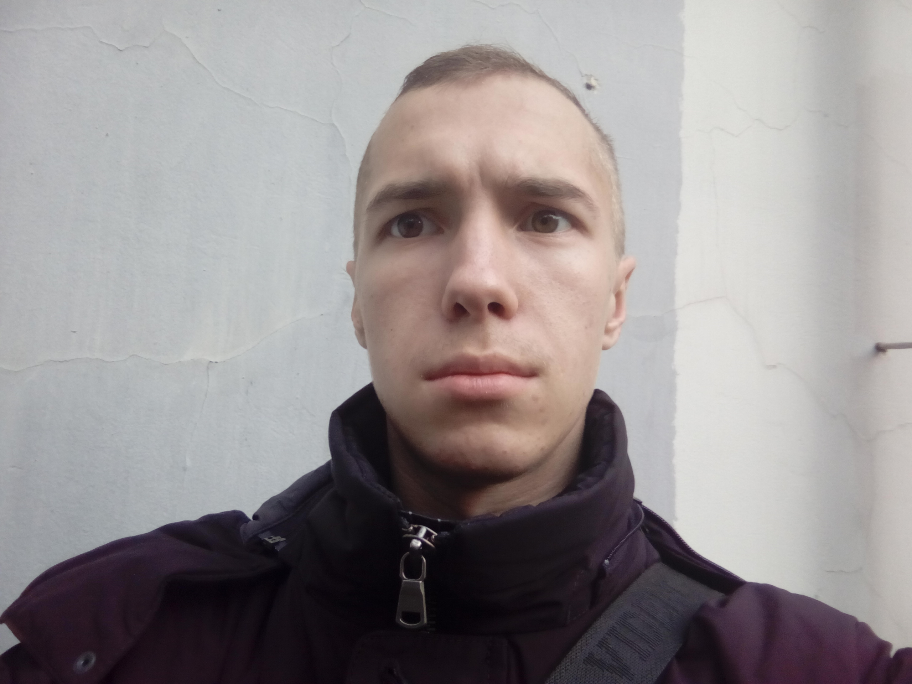
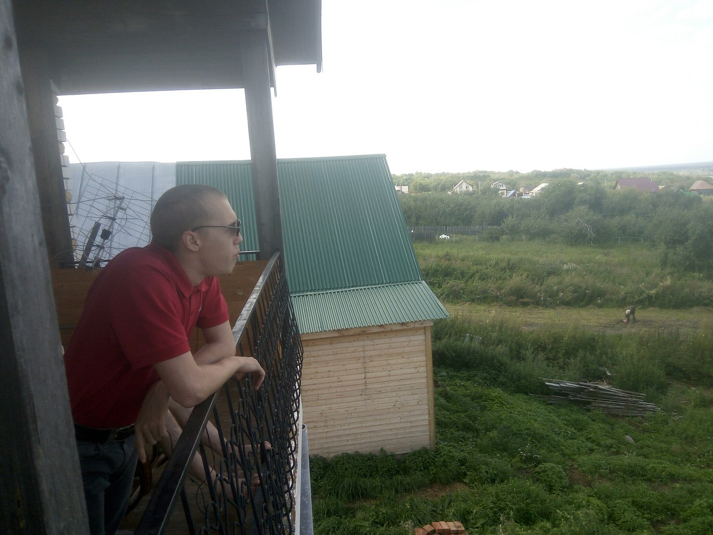
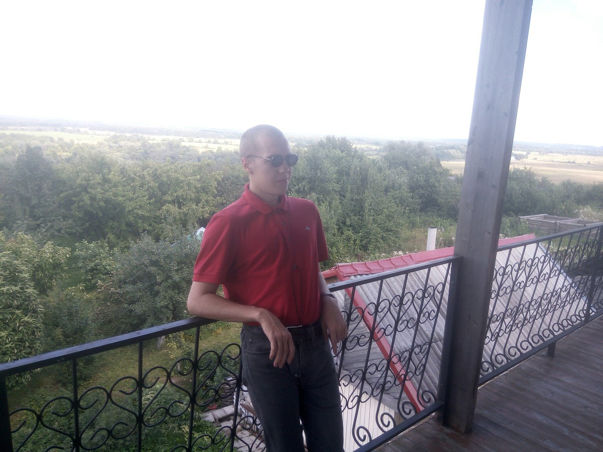
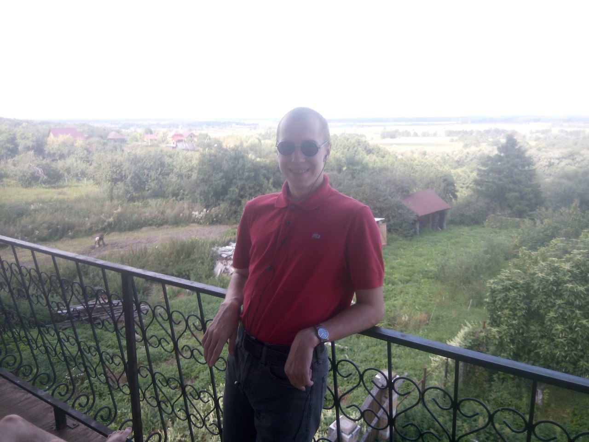

Корольков Павел Васильевич

Обо мне:
Родился я 27.04.1998 в гор. Саров Нижегородской обл. Закончил саровскую "Гимназию №2".
В 2017 году переехал в Москву, учусь в НИУ ВШЭ на программе философия.
Контакты:
Личные страницы:
vkontakte
GitHub
Steam
Телефон: 89087510163 -tele2
E-mail: pvkorolkov@edu.hse.ru